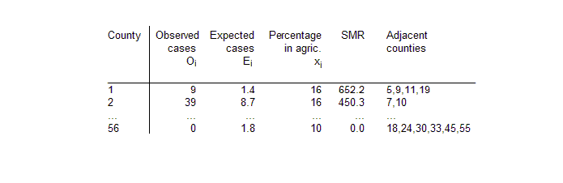

![[scotland0]](scotland0.bmp) Conditional Autoregressive
Conditional Autoregressive(CAR) models for disease
mapping: Lip cancer in
Scotland
The rates of lip cancer in 56 counties in Scotland have been analysed by Clayton and Kaldor (1987) and Breslow and Clayton (1993). The form of the data includes the observed and expected cases (expected numbers based on the population and its age and sex distribution in the county), a covariate measuring the percentage of the population engaged in agriculture, fishing, or forestry, and the "position'' of each county expressed as a list of adjacent counties.
We note that the extreme SMRs (Standardised Mortality Ratios) are based on very few cases.
We may smooth the raw SMRs by fitting a random-effects Poisson model allowing for spatial correlation, using the intrinsic conditional autoregressive (CAR) prior proposed by Besag, York and Mollie (1991). For the lip cancer example, the model may be written as:
O i ~ Poisson( m i )
log m i = og E i + a 0 + a 1 x i / 10 + b i
where a 0 is an intercept term representing the baseline (log) relative risk of disease across the study region, x i is the covariate "percentage of the population engaged in agriculture, fishing, or forestry" in district i, with associated regression coefficient a 1 and b i is an area-specific random effect capturing the residual or unexplained (log) relative risk of disease in area i. We often think of b i as representing the effect of latent (unobserved) risk factors.
To allow for spatial dependence between the random effects b i in nearby areas, we may assume a CAR prior for these terms. Technical details, including parameterisation and a discussion of suitable hyperpriors for the parameters of this model, are given in appendix 1 . The car.normal distribution may be used to fit this model. The code for the lip cancer data is given below:
Model
model {
# Likelihood
for (i in 1 : N) {
O[i] ~ dpois(mu[i])
log(mu[i]) <- log(E[i]) + alpha0 + alpha1 * X[i]/10 + b[i]
# Area-specific relative risk (for maps)
RR[i] <- exp(alpha0 + alpha1 * X[i]/10 + b[i])
}
# CAR prior distribution for random effects:
b[1:N] ~ car.normal(adj[], weights[], num[], tau)
for(k in 1:sumNumNeigh) {
weights[k] <- 1
}
# Other priors:
alpha0 ~ dflat()
alpha1 ~ dnorm(0.0, 1.0E-5)
tau ~ dgamma(0.5, 0.0005) # prior on precision
sigma <- sqrt(1 / tau) # standard deviation
b.mean <- sum(b[])
}
Data (click to open)
Note that the data for the adjacency matrix (variables adj , num and SumNumNeigh ) have been generated using the adj matrix option of the Adjacency Tool menu in GeoBUGS . By default, this treats islands as having no neighbours, and so the three areas representing the Orkneys, Shetland and the Outer Hebrides islands in Scotland have zero neighbours. You can edit the adjacency map of Scotland to include these areas as neighbours if you wish. The car.normal distribution sets the value of b i equal to zero for areas i that are islands. Hence the posterior relative risks for the Orkneys, Shetland and the Outer Hebrides in the present example will just depend on the overall baseline rate a 0 and the covariate x i . Alternatively, you could specify a convolution prior for the area-specific random effects (Besag, York and Mollie 1991) which partitions the overall random effect for each area into the sum of a spatial component plus a non-spatial component. In this model, the islands will just have a non-spatial term for the random effect. See example on lung cancer in a London Health Authority for details of this model.
Inits for chain 1 Inits for chain 2 (click to open)
Note that the initial values for elements 6, 8 and 11 of the vector b are set to NA since these correspond to the three islands ( Orkneys, Shetland and the Outer Hebrides). The values of b are set to zero by the car.normal prior for these 3 areas, and so they are not stochastic nodes.